Máy quả Háu Ăn: rig AtomSpine và 12 clip
2026-11-26. Rig đã có viền mực và đã vào game (lều Hội Máy Quả). Ảnh động dưới đây kết xuất từ rig: ô cuộn để trống vì hình cuộn do game vẽ.
0. Trong game (ảnh chụp lúc Play, màn 1:2)
Lão Mực đứng sau quầy kéo cần, máy bị giật rồi quay; hình cuộn méo theo thân máy. Bấm ảnh để phóng to.
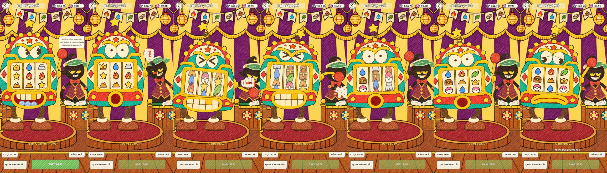
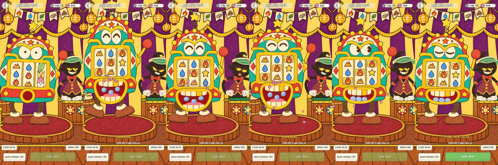
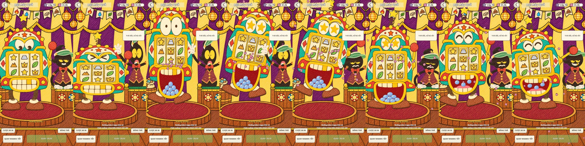
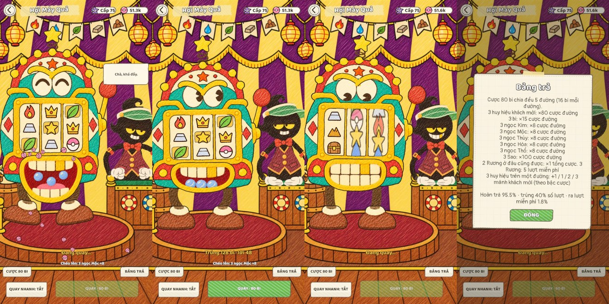
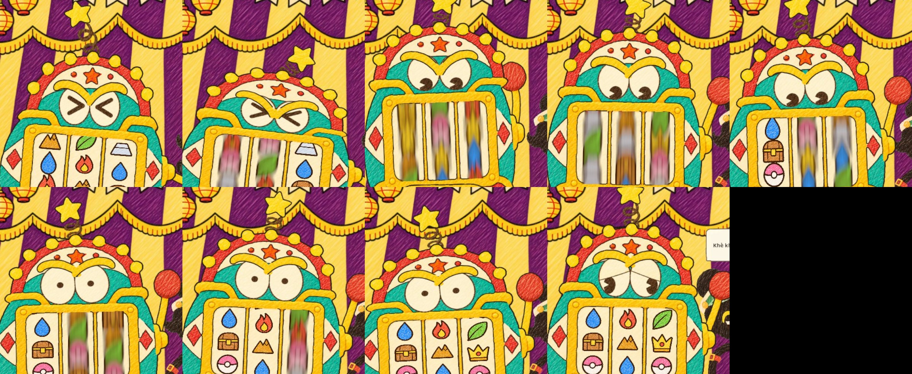
1. Một lượt quay trọn
Ghép các clip theo đúng thứ tự game sẽ gọi: chờ → Lão Mực giật cần → cuộn chạy → ba cuộn dừng lần lượt → kết quả. Chỗ nối ở đây cắt thẳng; trong game runtime hoà 0,12 giây.
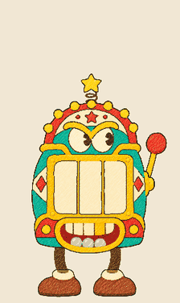
2. Từng clip
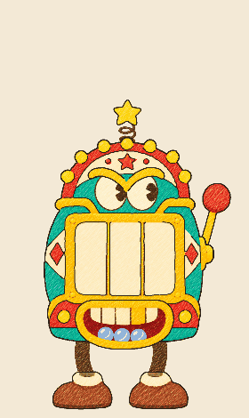
keo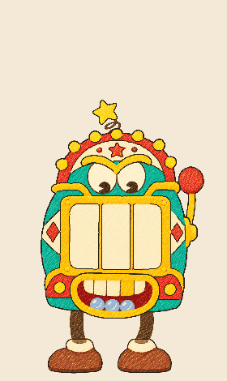
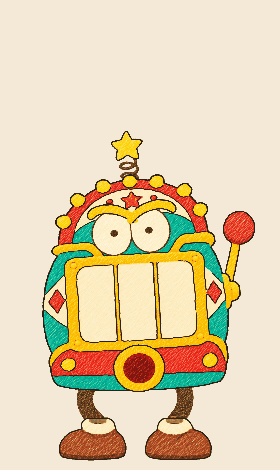
cach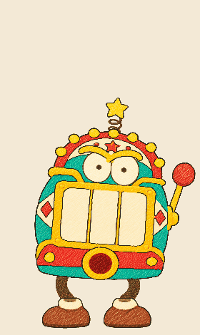
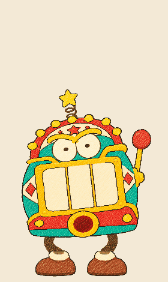
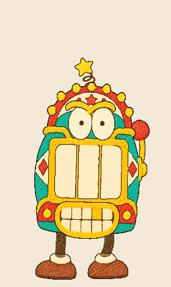
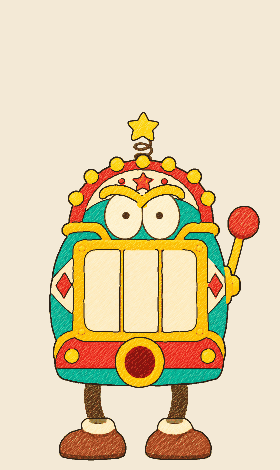
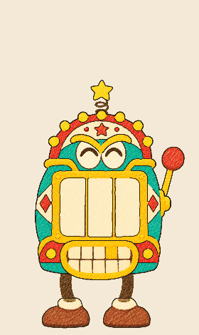
nha_bi hai lần (game phun bi ở miệng)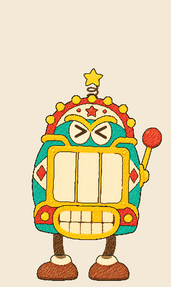
no, het_no, dap (rung màn), nha_bi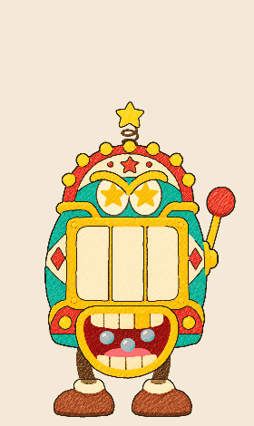
mien_phi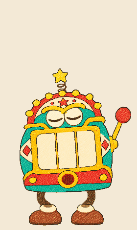
chao3. Hình đem rig
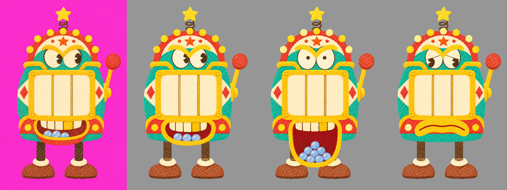
| Mảnh | Xương | Động thế nào |
|---|---|---|
| Thân (một lưới 774 đỉnh) | ba khối chồng nhau: hông, tấm khung cuộn, vòm đầu | nén giãn và nghiêng trễ dần lên trên; khung cuộn là tấm cứng nên hình cuộn game vẽ luôn khít |
| Mắt 8 hình, miệng 6 hình | mỗi thứ một xương | đổi hình theo cảm xúc, co giãn; mắt lồi to lúc jackpot |
| Hai nửa dải mày | xoay quanh đầu ngoài | nhướn, cau, rũ |
| Cần + núm đỏ | 3 đốt + núm | bị giật xuống 105° rồi bật lại, rung dư; tay Lão Mực bám xương num |
| Lò xo ăng ten + sao | 3 đốt + sao | lò xo trễ, co giãn theo thân |
| Hai ống chân, hai giày | 4 đốt mỗi ống | thân hạ xuống thì ống phình cong ra ngoài, giày ghim đất; rời đất thì giày treo, mũi chúc xuống |
| 9 bóng đèn sáng (hai nhóm) | bám thân | chạy đuổi theo phách, nháy nhanh khi trúng, tắt khi trượt |
File: atom/export/may_qua.atomik (2,5 MB, 31 xương, 16 lớp, 1.531 đỉnh, 12 clip). Mở rig trong AtomSpine Studio để xem từng khung và ghi nhận xét: py -3 -I rig\mo_studio.py.
4. Đã làm thêm (đợt "làm nốt")
- Viền mực: 50 nét trên lớp
viencủa từng ảnh mảnh trong Paint của AtomSpine (sinh bằngrig/ve_vien.py, sửa tay được trong Studio). - Lão Mực kéo cần: clip
sl_pull(1,1 s) thêm vào rig Lão Mực; bàn tay bám núm theo đúng đường núm của clippullcủa máy, hai clip phát cùng một khung.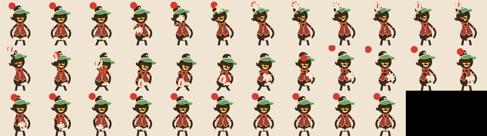
- Unity: nền lều mới, 9 biểu tượng cuộn vẽ lại, hình cuộn trượt trong ô và méo theo thân máy,
SlotSceneviết lại, bi phun + rung màn theo sự kiện của rig, bảng thông tin gập ở góc trái dưới.
5. Còn lại
- Chưa thử trên máy Android thật; chưa có âm thanh riêng (đang dùng tiếng sẵn của game).
- Màn 1:2 cắt mất vài px mép trái thân máy lúc nó bẹp ngang.